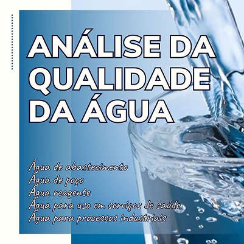
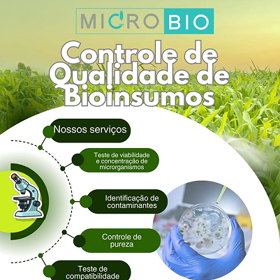
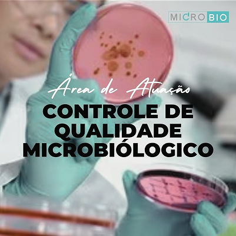

Destaque na prestação de serviços voltados ao agronegócio, a Universidade de Passo Fundo (UPF) apresenta, na Expodireto Cotrijal 2025, a UPF Serviços, a unidade de negócios da Instituição que coloca o conhecimento e a estrutura construídos em décadas de dedicação à disposição da comunidade. São laboratórios, centros de pesquisa, além de professores e funcionários que atuam na oferta de soluções especializadas, atendendo empresas de todos os portes, bem como pessoas que buscam serviços de qualidade.
11/03/2025
 @microbiolaboratorio
@microbiolaboratorio




